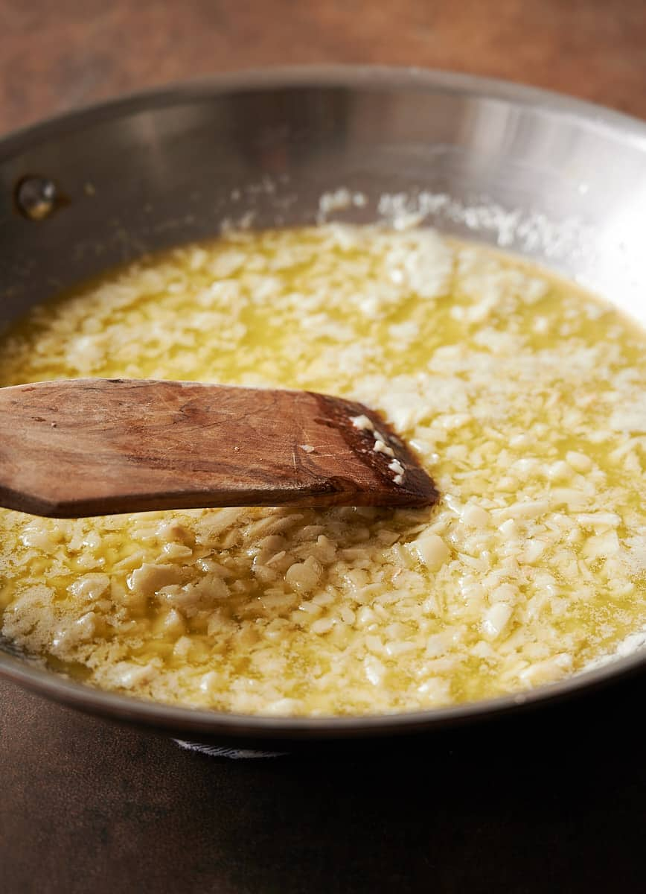
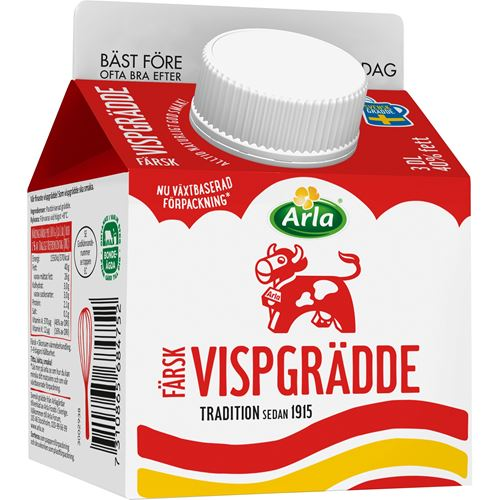
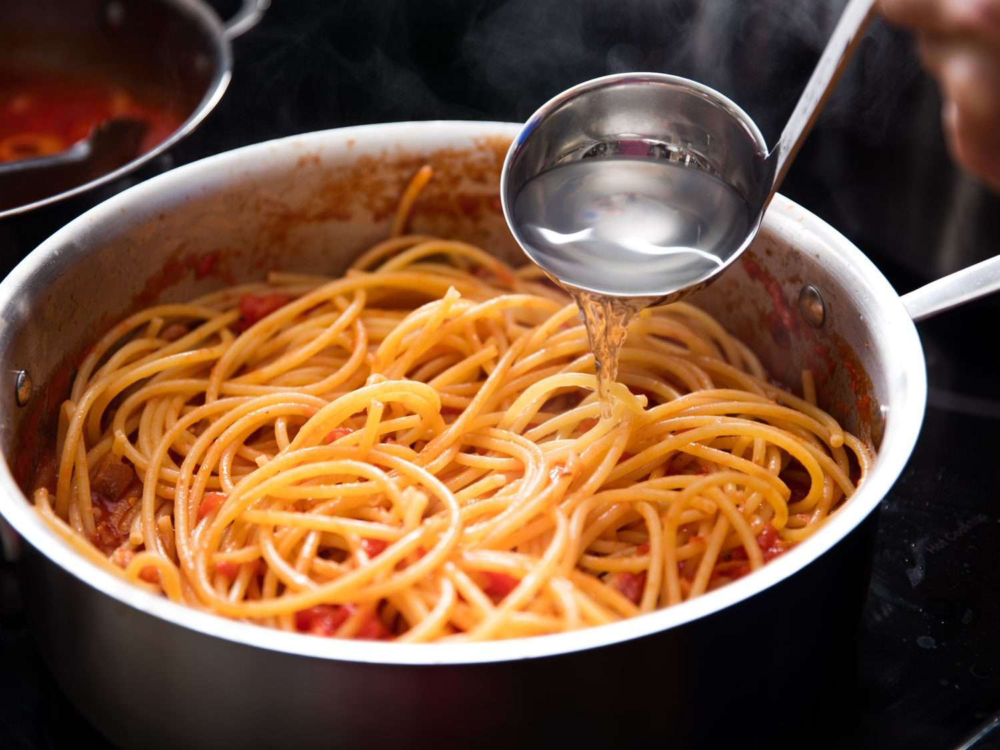
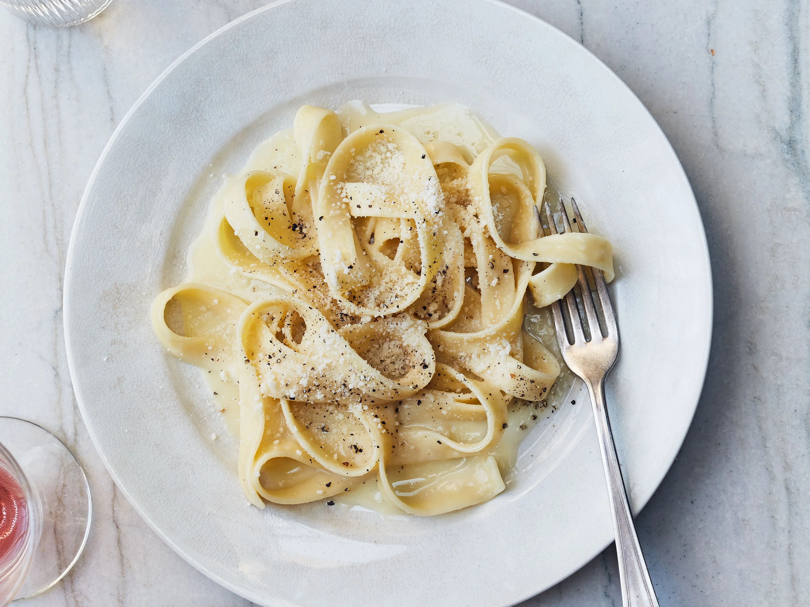

Steg 1
Börja med att koka vatten i en kastrull och krydda vattnet med salt. När vattnet koka lägg till pastan och laga som det står på paketet

Steg 2
Finhacka vitlök och stek det tillsammans med smör i en stekpanna tills den blir mjuk i 1 till 2 minuter

Steg 3
Lägg till vispgrädde och låt den småkoka i medelhög värme i runt 5 minuter för att tjockna, lägg sedan i salt, peppar och hälften av parmesanen och vispa tills den blir len.

Steg 4
Spara lite pastavatten, pasta vattnet är full av smak som passar bra med såsen.

Steg 5
Blanda in såsen tillsammans med Pastan och ha i resten av parmesanen, lägg på lite persilja om önskat.